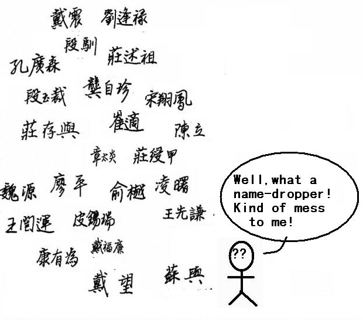
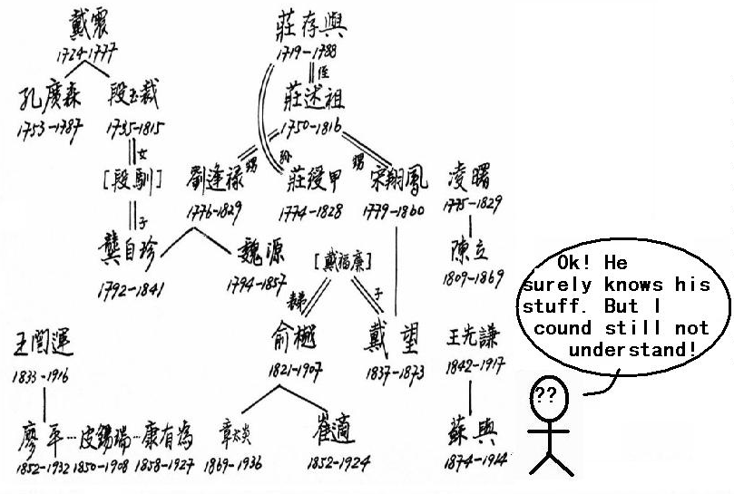
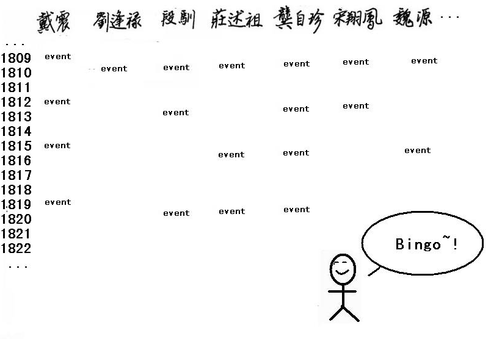
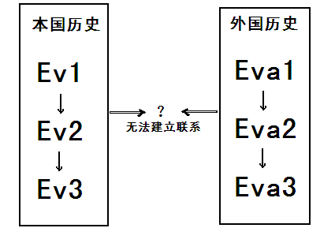
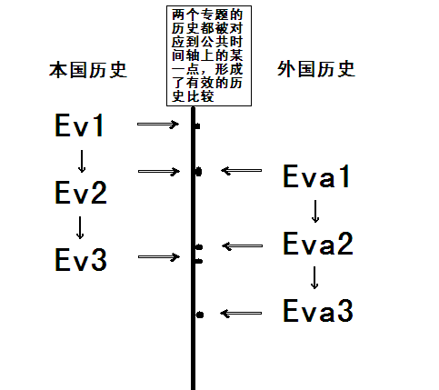
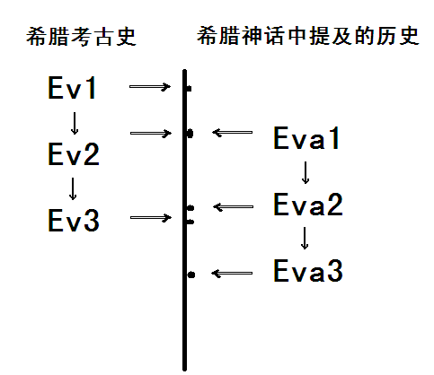
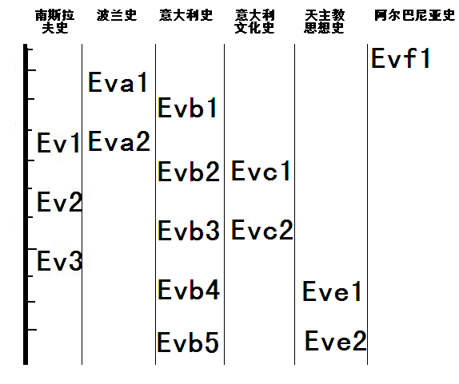
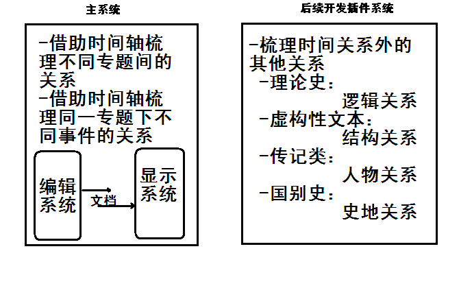

Kamparë 是一款基于网络服务，类似 Wikipedia 的历史学习系统，用于帮助时间精力有限的备考学生或非专业学生快速了解某一特定主题的历史；
Kamparë 利用统一的时间轴，可以轻松实现不同主题间的比较，从而帮助用户在面对千头万绪的历史脉络时保持清晰的思路。
背景介绍
有的时候，我们经常会在网上遇到一系列复杂却又相关的概念，我们只能通过取消时间维度的作法，把一个个历时的、过程的概念浓缩成一个个“去时间化”的专有名词，再找到不同专有名词间的关系。然而，对于非专业人士来说，这毕竟是名词间的堆砌，虽然可能有一定逻辑，但并不直观，不利于学习、理解、记忆，遑论分析并进一步得出自己的结论。如果有一款程序能根据用户具体的需要，把每一个“专名”都还原成历时的、过程的“专题史”，再将每一个具体的专题史事件对准到统一的时间轴进行比较，则可帮助初学者极快速度地掌握基本史实概念，厘清关系，降低学习历史的门槛。


在学习或了解历史知识的过程中，我们经常会发现，很多国人对于西方世界的历史，尤其是古代史，往往很容易记住相对的时间顺序，比如事件之间的先后顺序，而很难厘清一个绝对的时间维度——脱离自己熟悉的某一主题历史（如本国历史）的参照系，就很难把某一时期的历史绝对掌握清楚。由于在大众观念里，东西方历史长期相互隔绝、平行发展，在学习的过程中，尤其在融会贯通之前，上述人群往往容易产生“西方世界的历史是‘平行世界’历史”的错觉，而很难建立整体的、系统的大历史观念。如果一款程序能通过“比较研究”的方法论优势，利用用户对本国史的“熟悉感”和时间轴的公共属性，构建出一个参照系，那么学习不熟悉的外国历史就变得和学习本国历史一样直观；学习话语权缺乏的少数民族和弱势族裔的历史，也会和学习耳熟能详的大国大族的历史一样简单；学习枯燥的物质文明历史（诸如陶瓷史、金属冶炼史、货币铸造史、作物培育史、药物发展史、器具形制史）就会和学习生动活泼的精神、社会文明历史一样有趣。

而有的时候，非历史专业的学生又面临着必须掌握历史知识才能完成特定课业任务的问题，比如学习美索不达米亚或希腊神话的学生，很希望在最短时间内获得该地区的历史知识（对于他们来说，这是不可或缺，但优先级并不在最前的“背景知识”），而又不影响他们在有限的时间内学好该地区的神话。对于这种问题，一款能同时比较该地区的历史、临近地区的历史、某一文明的专题史（如文化史、文学艺术史、考古史、政治经济史等）的工具，可使学习者获益良多，还节省了自己的宝贵时间。

这样，用户可根据自己的需要，编辑或下载不同专题的电子文档，从而获得最适合自己学习或工作任务的独特的历史比较表格：

系统的优势
Kamparë 系统比现有的基于时间轴展示讯息的 TimelineJS 系统增加了不同主题间的比较功能，用户可以利用统一的时间轴来比较自己熟悉的历史和自己不熟悉的历史，结合自己之前的学习经验建立为自己私人定制的参照系，从而达到更好的学习效果，并帮助资深学术工作者对不同版本的历史描述进行比较、将虚构性叙事作品和该作品设定的历史背景史实进行比较，并得到一些在非比较性工作中较不容易得出的灵感和结论。
Kamparë 系统比现有的基于网络服务的百科 Wikipedia 系统增加了更加人性化、用户友好度较高的离线编辑功能，用户可以完全专注地在脱离互联网的环境进行工作，把要编辑的内容打包成文档，并通过文档的上传-分享-打分系统控制内容质量；除此之外，本系统增加了更符合严肃学术工作需要的小工具，用户直接编辑并生成符合学术规范的时间轴表格，而不是用散文的形式展开历史事件的串接。
运营模式
用户先根据自己的需要在云文档库里寻找特定主题的文档，如果无法找到，则在编辑器（编辑系统）中创建一个文档，并上传到云文档库，其他用户可以下载并打分评价，用户则可以查看、阅读这些反馈，进一步的用户间互动体验则留待后续阶段开发。
被下载的文档都集中在本地程序指定的某一文件夹目录中，用户根据需要在主程序的显示系统中打开，或继续在编辑器中编辑。一组编辑好的文档，每个文档对应一个历史主题，同时在主程序中打开即可实现比较。
Kamparë 系统的收费方式在完成开发后的第一阶段以增值服务性收费为主，比如限制非付费用户在本地存储的电子文档数目上限，和/或在显示系统中能同时打开以进行比较的电子文档数目上限。日后待系统成熟，可被推广用作商品图书试阅工具，从而与网络书店等电商机构进行合作。以往的“截图式”试阅模式体现了“有细节无概览”的一种可能性的极端，而成熟的 Kamparë 系统则可以提供完全相反的“有概览无细节”的另一种可能性，亦可在网路上与出版商合作推出某些书籍的“简装速读”版本。

软件结构
软件分为主系统、编辑系统、显示系统和插件系统四大部分。
主系统是用户进入退出 Kamparë 的欢迎、欢送界面，同时也是用户实现和其他用户交互的场所。用户在这里上传自己制作的电子文档，下载别人制作的电子文档，管理自己的文档库，给电子文档的作者评分或留言提出意见，查看并阅读别对自己作品的评分和留言。一些基本的程序外观设置也需要在主系统中完成，例如字体、界面风格等。
编辑系统的设计秉承最大化用户友好度的设计理念，既是一款适用 Kamparë 显示系统的历史事件表格制作软件，也可以用来发挥更广泛的其他功能，诸如辑录家谱族谱、写日记、作工作计划、制作商品图书预览、编写小说或剧本大纲、制作课件等。编辑系统下设的四大子系统各有特色，“时间锚子系统”帮助用户更直观精准地编辑文本中关于时间轴定位的信息；“注释子系统”帮助用户更快更好地编辑引用和注释，从而酌情增加 Kamparë 电子文档的学术信实度与权威性，用户也可以在这里进行读书笔记和批注的编写；“关键词子系统”帮助系统更好地识别并处理普遍意义上的专有名词，并允许用户私人定制与其个人学习研究工作有关的关键词，从而为 Kamparë 系统增加小词典和小百科附加功能；“超链接子系统”可以帮助用户如同添加注释般，轻松地为每条历史事件添加附件，如各种格式的图片、音频或视频文件等，从而使 Kamparë 系统更适合作为历史教学工具被用在多媒体教学的课堂上。
显示系统是为了将编辑系统编辑好的文档按科学的算法呈现在用户面前，既与公共的时间轴严格对应，又不至于显得凌乱繁杂，帮助用户实现 Kamparë 系统承诺的“快速阅读历史事件”和“清晰比较事件关系”两大目标。
插件系统是 Kamparë 系统将后续开发和/或与现有其他产品合作的接口，从而使本系统更加立体化、丰富化、人性化。比如增加梳理概念间关系的逻辑结构系统，梳理叙事要素间关系的故事结构系统，梳理人物间关系的族谱/人际网系统，梳理史-地关系的地图系统等。目前故事结构分析系统的开发已经着手。
社会意义
从比较研究的学科来看，Kamparë 系统可以帮助思维比较单向度的用户培养建立更具比较性、对话性、多维度的思维方式。
从速读的角度来看，Kamparë 系统将历史书写文本抽取编辑成表格信息的形式，更适合当今高节奏上班族的碎片化时间速度。
从试阅的角度来看，Kamparë 系统提供了将完整的故事大纲大规模提供给读者试阅的技术上的可能，而虚构性文学的写作者在如此客观技术压力下，势必会提升自己的叙述艺术和描写细腻度，以往单纯靠好故事取胜而不注重优美文字和文学价值的作家将被迫转型成为更均衡的作家。
从写作的角度看，Kamparë 系统为作者提供了更舒适、更专一的时间线控制工具，并使虚构故事情节与真实历史记载的实时比对成为可能。
从娱乐的角度看，Kamparë 系统为共同语言日渐减少的两代人，甚至隔代人之间建立了新的沟通桥梁。很多大学生和年轻的上班族发愁和父母、祖父母缺少共同话题，现在，我们可以一边操作程序一边帮助长辈记录他们口述的回忆录，并把回忆录上传到云平台上与更多的人分享、比较，产生共鸣，简单易学的关键词系统可以轻松隐去主人公姓名，既给家庭留下长久的回忆，也给当下的时刻提供了合家欢乐的新娱乐方式。
从历史的角度看，Kamparë 系统致力于扭转国人“历史记录的是关于话语权掌有者在过去发生的事情”的欠妥观念，通过直观上不同专题间“平起平坐”的并置排列比较，让大家意识到：弱小民族的历史和强大民族的历史一样重要，正在发生的历史和早已逝去的历史一样重要，平凡人生的历史和王侯将相的历史一样重要。以独特的视角切入，见证社会转型期当代中国的史家争鸣，为被围困在象牙塔里的严肃史学打开出口，传递马克思主义唯物史观正能量。
开发者希望 Kamparë 系统传递这样一个声音：历史不仅仅是历史工作者的事情，我们每个人的一举一动既在改变历史，也在创造历史，从而每个社会人都有一定的义务去了解历史、记录历史。现代化绝对不是一个摒弃传统，将历史、当下和未来割裂的痛苦过程；网络化的新技术革命和新思维革命，把很多以前束之高阁的精英特权让度给了广大民众，其中就包括“关注、记载身边历史”这一以前作为精英阶层专利的神圣历史使命。如果我们每个人都可以利用Kamparë系统提供的技术便利，记载下家中老人值得回忆的生平事迹，记载下自己身边的点点滴滴，并利用科学的比较研究方法论去伪存真、去粗取精，那么我们给后人、给后代历史学家留下的一定是一个充满盎然生机的、不死不老的鲜活记忆，而不是如罗马废墟般物质和精神上双重的“黑暗时代”。如果，当今的人们不仅仅想到的是如何抢救前人未保护好的历史传统，而同时也明确地意识到自己有义务和责任去为后人记录当下——因为当下也将成为历史，今天的我们也将成为后代历史学家的研究对象——这种使命感将促成一个更加和谐的、可持续发展的社会，人类作为一个生物物种将注定意识到：每一代的每一个个体，无论他多么平庸，多么卑微，都是这个时代历史不可或缺的一部分，他们有使命去追求这个时代的真、善、美，并以此为后人留下只有他们能够留下的巨大历史财富。

开发进度及目前版本的简述
软件开发始于 2014 年 9 月，分为 4 个阶段开发。
2014 年 9 月 - 2015 年 1 月，可行性研究，原型设计
2015 年 1 月 - 2015 年 4 月，编辑器开发
2015 年 4 月 - 2015 年 8 月，显示系统开发
2015 年 8 月 - 2015 年 10 月，社区平台开发
目前还在建立工作流程与原型的阶段当中。